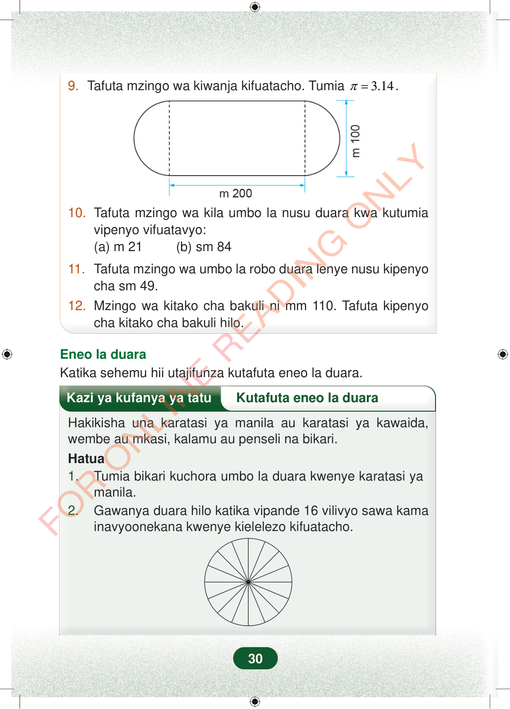

9.Tafuta mzingo wa kiwanja kifuatacho. Tumia3.14π=.10.Tafuta mzingo wa kila umbo la nusu duara kwa kutumiavipenyo vifuatavyo:(a) m 21 (b) sm 8411.Tafuta mzingo wa umbo la robo duara lenye nusu kipenyocha sm 49.12.Mzingo wa kitako cha bakuli ni mm 110. Tafuta kipenyocha kitako cha bakuli hilo.Eneo la duaraKatika sehemu hii utajifunza kutafuta eneo la duara.Kazi ya kufanya ya tatuKutafuta eneo la duaraHakikisha una karatasi ya manila au karatasi ya kawaida,wembe au mkasi, kalamu au penseli na bikari.Hatua1.Tumia bikari kuchora umbo la duara kwenye karatasi yamanila.2.Gawanya duara hilo katika vipande 16 vilivyo sawa kamainavyoonekana kwenye kielelezo kifuatacho.30
9. Tafuta mzingo wa kiwanja kifuatacho. Tumia 3.14 π = .
10. Tafuta mzingo wa kila umbo la nusu duara kwa kutumia vipenyo vifuatavyo: (a) m 21 (b) sm 84
11. Tafuta mzingo wa umbo la robo duara lenye nusu kipenyo cha sm 49. 12. Mzingo wa kitako cha bakuli ni mm 110. Tafuta kipenyo cha kitako cha bakuli hilo.
Eneo la duara Katika sehemu hii utajifunza kutafuta eneo la duara.
Kazi ya kufanya ya tatu Kutafuta eneo la duara
Hakikisha una karatasi ya manila au karatasi ya kawaida, wembe au mkasi, kalamu au penseli na bikari. Hatua 1. Tumia bikari kuchora umbo la duara kwenye karatasi ya manila. 2. Gawanya duara hilo katika vipande 16 vilivyo sawa kama inavyoonekana kwenye kielelezo kifuatacho.
30
9.Tafuta mzingo wa kiwanja kifuatacho.Tumia π=3.14.Umbo la kiwanja lenye sehemu ya kati iliyonyooka na ncha mbili za nusu duara. Sehemu ya chini ya kati ni m 200, na upana wa umbo ni m 100.10.Tafuta mzingo wa kila umbo la nusu duara kwa kutumia vipenyo vifuatavyo:(a) m 21(b) sm 8411.Tafuta mzingo wa umbo la robo duara lenye nusu kipenyo cha sm 49.12.Mzingo wa kitako cha bakuli ni mm 110.Tafuta kipenyo cha kitako cha bakuli hilo.Eneo la duaraKatika sehemu hii utajifunza kutafuta eneo la duara.Duara limegawanywa katika vipande 16 vilivyo sawa kwa mistari inayotoka katikati. Mchoro huu unaonyesha jinsi ya kuligawa duara kwa shughuli ya kutafuta eneo la duara.